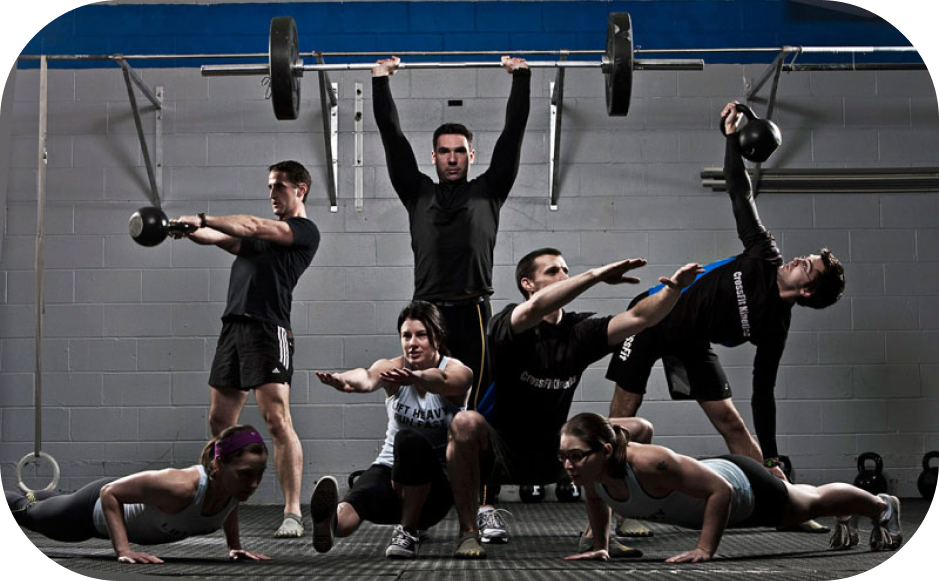

DIETA
Durante la fase di definizione, ecco alcuni consigli per impostare la tua dieta:
ALLENAMENTO
Un programma di allenamento completo durante la fase di definizione comprende sia esercizi di resistenza che attività cardiovascolari. Gli esercizi di resistenza aiutano a mantenere la massa muscolare e a aumentare il metabolismo, mentre le attività cardiovascolari bruciano calorie e favoriscono la perdita di grasso corporeo. È importante variare gli esercizi, progredire nell'intensità e ottenere una combinazione equilibrata di entrambi per massimizzare i risultati. Consultare un professionista dell'allenamento può essere utile per un programma personalizzato. Gli esercizi multiarticolari che coinvolgono più gruppi muscolari sono preferibili per massimizzare la stimolazione muscolare. Il riposo e il recupero sono essenziali per permettere ai muscoli di ripararsi e crescere. La consistenza nell'allenamento e la progressione graduale sono importanti per ottenere risultati. È consigliabile lavorare con un professionista del fitness per personalizzare il programma di allenamento in base alle tue esigenze.
